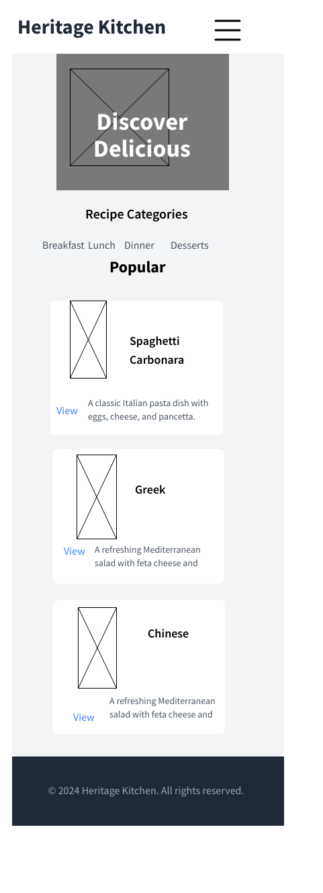
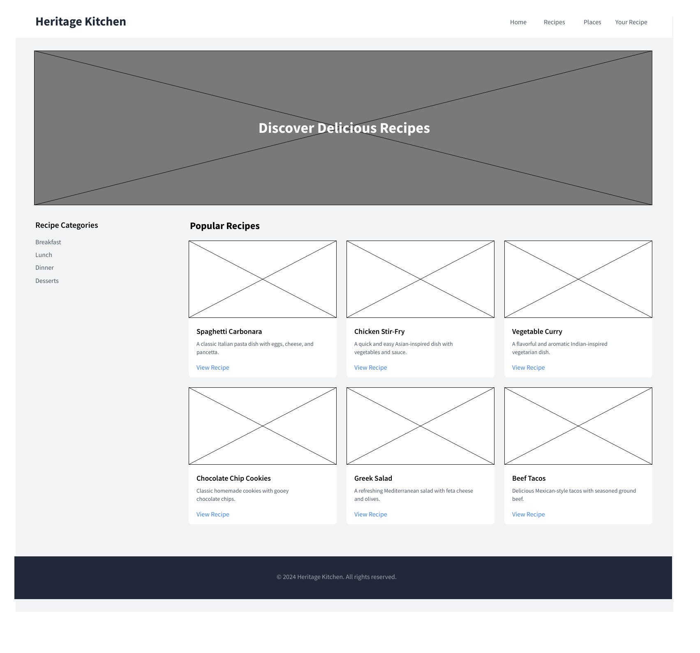

Site Name
Heritage Kitchen
This name reflects the core theme of the project, celebrating culinary traditions passed down through generations.
Optional domain availability: heritagekitchen.com
Site Purpose
The site provides a digital hub for exploring a collection of personal recipes from various ethnicities, allowing users to connect with rich culinary heritage. It will feature recipes, dish history, and user customization options.
Scenarios
- 1. What are some traditional recipes from my cultural background?
- 2. How can I filter recipes based on meal type or cultural origin?
Color Schema
Primary Color: Skobeloff - Used for headings and accents.
Secondary Color: Chinese Gold - Used for buttons, link hover effect.
Background Color: White - Used for background
Text Color: Black - Used for body text to ensure good contrast and readability.
Typography
Font Selections:
- Roboto: Used for body text to ensure readability. Example text
- Georgia: Used for headings to add elegance and contrast. Example text
- Verdana: Used for buttons and calls to action for clarity. Example text
Wireframe
Mobile View: A vertical layout with a single column, hero image for easy scrolling, featuring a header, recipe categories, popular recipes, and a footer.
Desktop View: A horizontal layout with multiple columns, including a header, hero image side navigation for categories, main content area for popular recipes, and a footer.
Home
Return to the main page of the site, where you can find featured recipes and updates.
Places
Explore various cultural regions and their unique culinary traditions and influences.
Recipes
Browse a collection of family recipes organized by category and cultural origin.
Your Recipe
Submit your own recipe via form to share with the community and celebrate your culinary heritage.